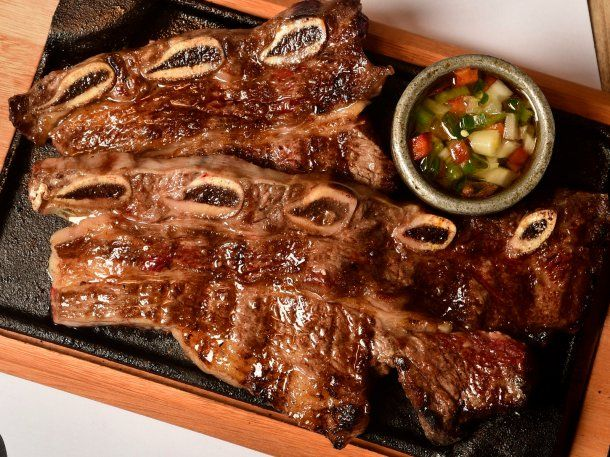
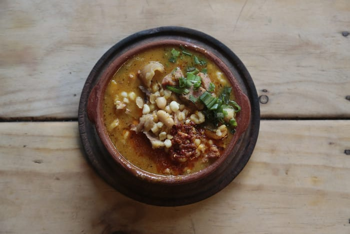
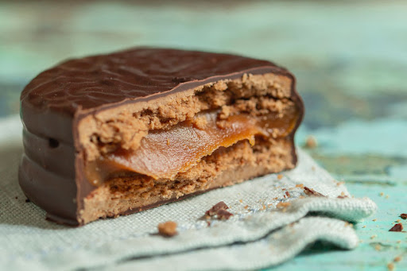
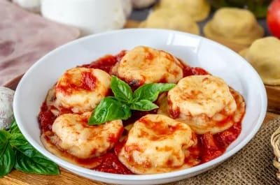
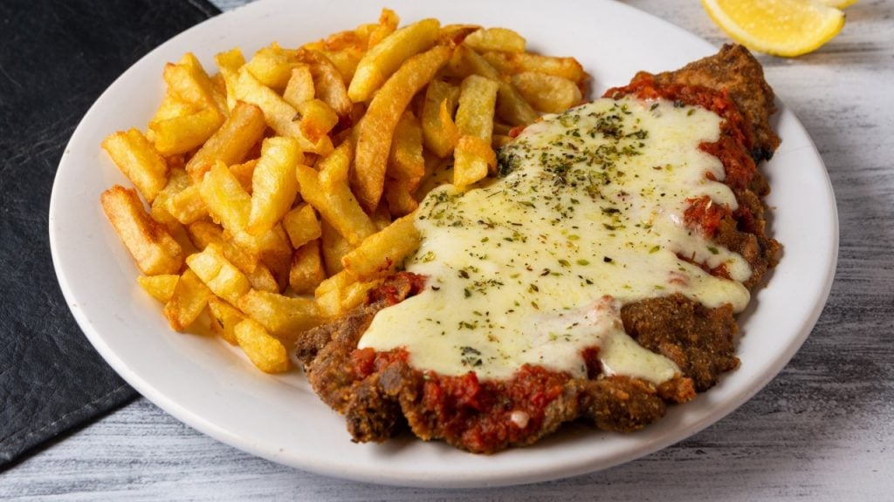
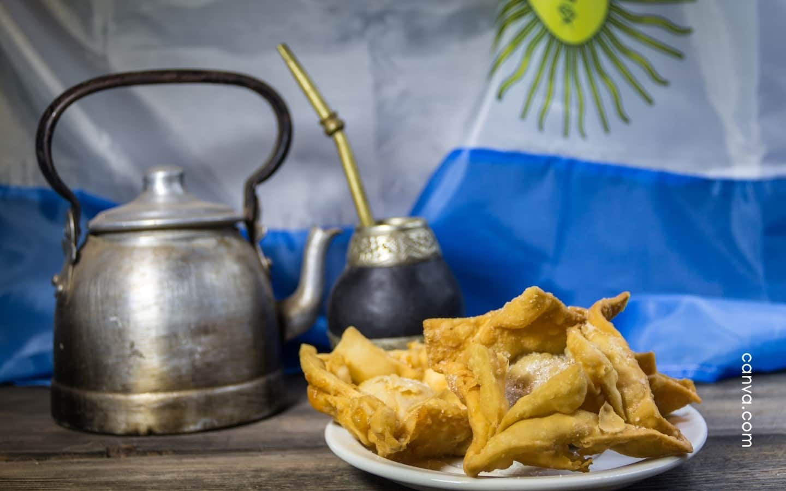
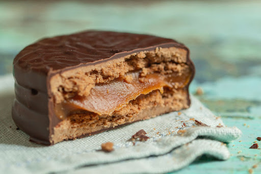
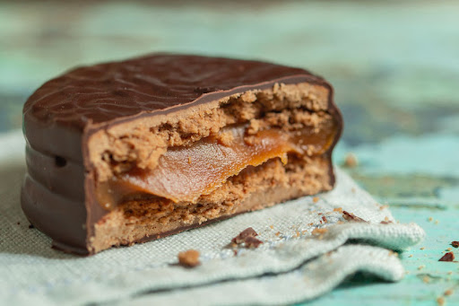

Argentina es un país reconocido en todo el mundo por su rica gastronomía, resultado de las numerosas influencias que convergen en su cultura. Así, el legado culinario de sus pueblos indígenas se entremezcla con la influencia del colonialismo español, la cultura gaucha o las reminiscencias de Italia, país de origen de muchos emigrantes llegados desde el otro lado del charco.
El país cuenta con un vasto territorio que determina por completo su gastronomía a través de su producción ganadera y hortofrutícola. Sus llanuras lo convierten en un importante productor de carnes (vacuno principalmente), cereales o lácteos y derivados. Y de eso se aprovecha su cocina más tradicional, de la que queremos mostrarte algunos platos que podrás elaborar en casa.
Y es que Argentina es mucho más que asados y parrillas.

Sus empanadas, el choripán, las milanesas, el chimichurri, el dulce de leche, los alfajores, los panqueques…
LA COCINA ARGENTINA EN EL SIGLO XIX
Si hay algo en lo que la mayoría de los historiadores están de acuerdo es que a lo largo de la época colonial los rioplatenses tenía una alimentación variada y abundante. Los menúes podían incluir hasta seis platos (sin contar el postre), y las opciones más populares como el puchero, diferentes cortes de carne y pescados siempre venían acompañados por una buena cantidad de vegetales.

Pero hacia fines del siglo XIX , y por diferentes motivos, la gastronomía comenzó a volverse más uniforme y menos rica, y los platos típicos se convirtieron rápidamente en los más populares. Las clases más acomodadas, aunque eventualmente se daban algunos gustos, tampoco podían permitirse disfrutar de los manjares de antaño con la misma regularidad.
Otra de las estrellas de la cocina tradicional en la época previa la Independencia fue la carbonara, un guiso de carne cocinado dentro de un zapallo al que se le agregaban duraznos, pasa de uva y cebolla originario de Béligca. Si bien en Europa se cocinaba con cerveza, en nuestro país la receta se completaba con vino.
Si bien muchos califican a la cocina de este siglo como "aburrida", nadie puede negar la infinidad de bocados dulces que podían encontrarse por las calles en aquel entonces. Desde batata y membrillo, pasando por los clásicos los alfajores y hasta la mazamorra y las tortas fritas.

LA COCINA ARGENTINA EN EL SIGLO XX
Con la llegada de los inmigrantes europeos a fines del siglo XIX y principios del siglo XX, la gastronomía argentina ganó un nuevo ímpetu. Los italianos fueron los que influenciaron con más fuerza a las recetas rioplatenses. No por nada, hoy en día la pizza, las pastas y las milanesas son algunas de las comidas favoritas de los locales.
Si hablamos de las pastas secas, en aquella época los rioplatenses tuvieron la suerte de degustar por primera vez algunas de las grandes especialidades de Italia. Hablamos de las rellenas con preparaciones complejas y siempre deliciosas.

En cuanto a las pizzas, si bien en Europea se cocinaban con una masa más liviana, en el Río de la Plata desde un primer momento se prepararon con mayor cantidad de levadura para fueran más gruesas.
En relación con la milanesa, un plato originario de Milán, tampoco tardó en ganar adeptos en Argentina. Los rioplatenses, aunque no pueden adjudicarse la creación de esta delicia, sí pueden jactarse de haber creado una de sus versiones más populares: la famosa "napolitana" (que incluye jamón , queso y tomate).

Los inmigrantes españoles también se encargaron de acentuar la influencia que los colonizadores ya habían ejercido en la cocina argentina. En este sentido se entiende que algunos de los platos típicos de la cocina criolla como los pucheros, los arroces y los guisos hayan mantenido su popularidad hasta nuestros días.
Aunque en menor medida que los italianos y los españoles, la cocina francesa también impactó de alguna manera a la argentina. En muchos de loso libros gastronómicos publicados en el siglo XX, las recetas más populares de esta cocina europea como los soufflés y los mousses, por solo mencionar algunas convivían con otras 100% criollas.
LA GASTRONOMIA ARGENTINA EN LA ACTUALIDAD
Pero, la cocina argentina no puede limitarse a su asado. Tampoco a sus empanadas, otros de los bocaditos más populares que se nos vienen a la mente cuando pensamos en la cocina tradicional.
Existen diferentes razones para convencerse de que la gastronomía de nuestro país hoy en día está en su mejor momento. Cada vez son más los eventos gastronómicos (ferias, exposiciones, concursos, etc) que acercan al público masivo el enorme potencial que tiene la cocina autóctona. Sin olvidar, por supuesto, que las principales ciudades del país, como Buenos Aires, tienen un circuito de restaurantes con opciones para todos los gustos.

Además, existe un interminable lista de chefs argentinos que triunfan en el mundo. Dos de ellos, Mauro Colagreco y Germán Martitegui,
fueron reconocidos recientemente en uno de los rankigs más importantes del mundo que celebra a los mejores 50 establecimientos gastronómicos del planeta.
Por todas estas razones, no quedan demasiadas dudas de que la cocina argentina es mucho más que un plato de carne....Variada como pocas, la gastronomía local ofrece un mundo de sabores para descubrir.
 
